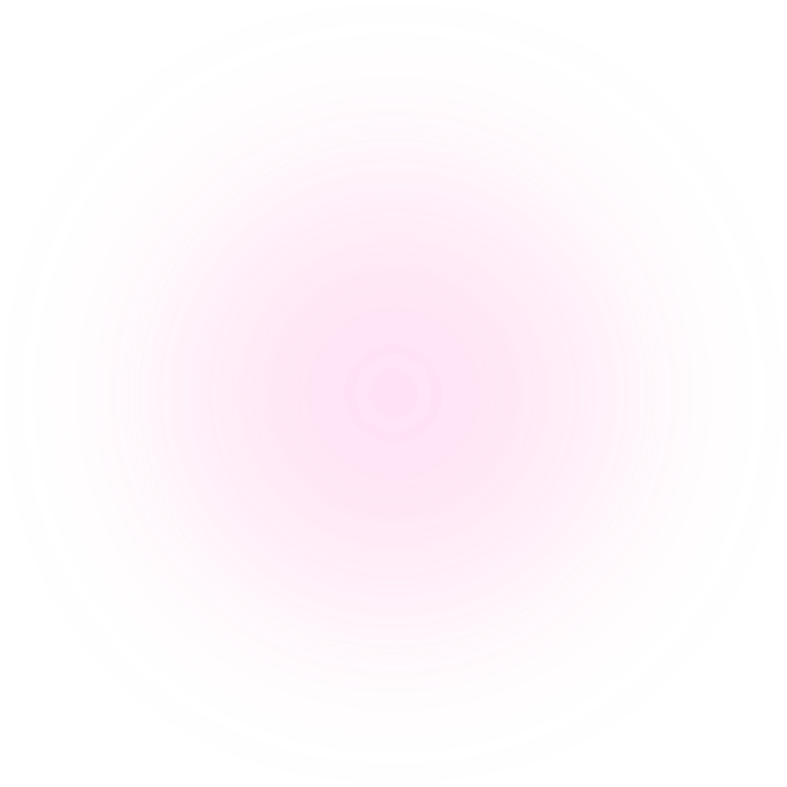
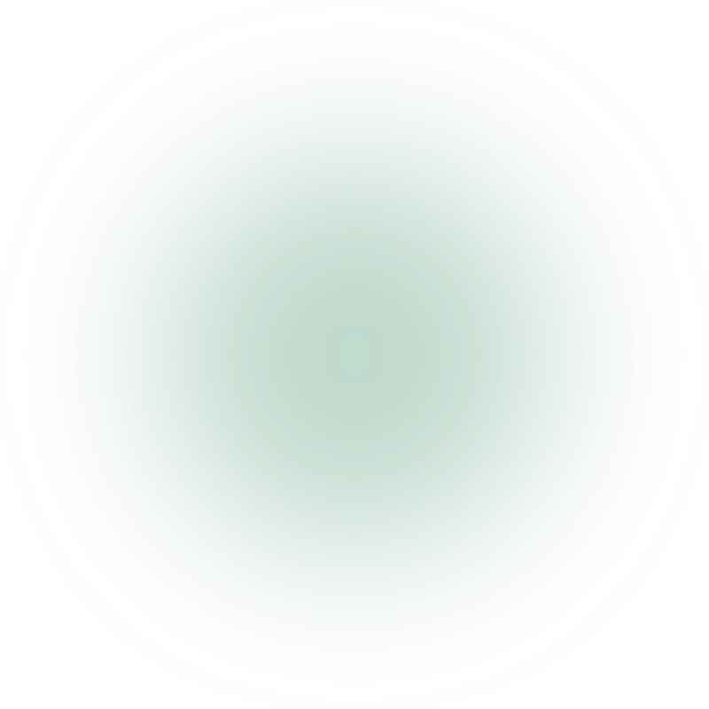
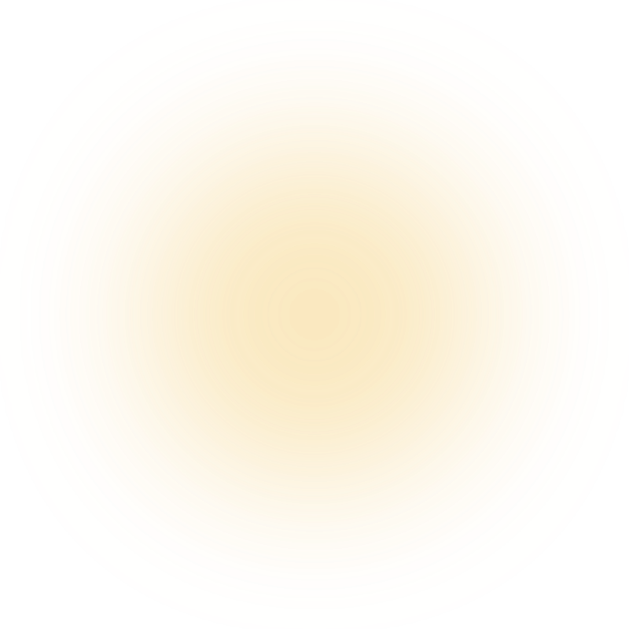
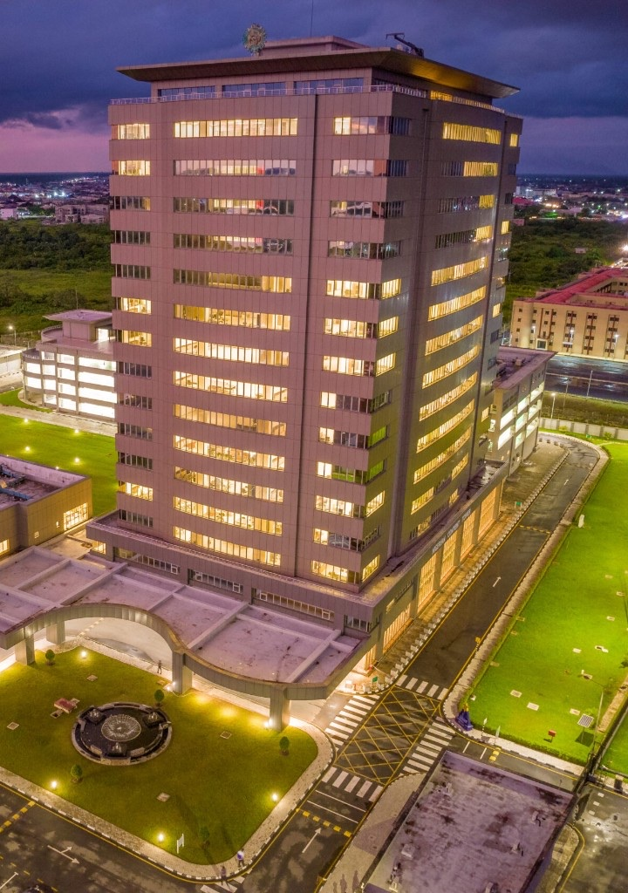

Programme Timeline
From the Technology Workshop to Finale Day: every milestone mapped out.
View TimelineThe NCDMB TIC 2026 is the maiden edition promoting Research to Commercialization (R2C), bridging the gap from concept to commercializing indigenous technologies from universities, research institutions, and young entrepreneurs.
From the Technology Workshop to Finale Day: every milestone mapped out.
View TimelineStage 3A finalists advancing through mentorship, the Entrepreneurship and Research to Commercialization Bootcamp, and Finale Day.
View FinalistsThe Tech IDEAS - TIC Launchpad is online. Build lasting capability through the learning ecosystem.
Visit Tech IDEAS - TIC Launchpad
The Tech Innovation Challenge (TIC) is a flagship NCDMB initiative designed to identify, nurture, and accelerate technology-driven innovations in Nigeria's oil and gas and related sectors.
The competition advanced 15 finalists through Physical Judging of Innovators, then puts them through rigorous mentorship and the Entrepreneurship and Research to Commercialization Bootcamp before Finale Day.
NCDMB TIC 2026 is a national initiative advancing Nigerian Content and indigenous innovation. Beyond the competition, NCDMB TIC is building a lasting innovation ecosystem through the Tech IDEAS - TIC Launchpad, which is online, connecting researchers, entrepreneurs, and industry partners for sustained impact.
Read More

A clear journey from discovery to market launch.
Groundbreaking ideas emerge from universities, research institutions, and young entrepreneurs, identifying high-potential solutions for Nigeria's oil, gas, and linkage sectors.
Innovators refine prototypes, validate feasibility, and build market-ready solutions through mentorship, coaching, and the Entrepreneurship and Research to Commercialization Bootcamp.
Winning ventures launch into the market with industry partnerships, funding support, and incubation, turning research into sustainable commercial impact.
Moving research into usable solutions.
Linking innovators with energy stakeholders.
Routes to scale high-potential solutions.
Building market-ready ventures.
A competitive multi-stage process from the 2025 NCDMB Technology Innovation Challenge Workshop through to incubation.
Programme start · 23 September 2025 · Pavilion by Golden Tulip, GRA, Port Harcourt.
Open call for innovators after the Workshop.
Online screening · 8–18 June 2026.
Judges were physically present at the NCDMB Towers, Yenagoa to judge the online pitching from innovators · 30 June – 2 July 2026.
Online coaching 13–31 July · Entrepreneurship and Research to Commercialization Bootcamp 3–7 August 2026.
Finale Day · 10–12 August 2026 · NCDMB Towers, Yenagoa.
Incubation for winners · 17 August – 6 November 2026.
Driving Local Content, Building the Nation
The Nigerian Content Development & Monitoring Board was established in 2010 by the Nigerian Oil and Gas Industry Content Development (NOGICD) Act to guide, monitor, coordinate, and implement local content development across Nigeria's oil and gas industry.
From its headquarters at the Nigerian Content Tower in Yenagoa, NCDMB deepens indigenous capability, enforces Nigerian Content compliance, and advances research, capacity building, and industry partnerships that industrialise the sector and its linkages.
To be the catalyst for the industrialization of the Nigerian Oil and Gas Industry and its linkage sectors.
To promote the development and utilization of in-country capacities for the industrialization of Nigeria through the effective implementation of the Nigerian Content Act.
Patriotism, Passion, Professionalism, Integrity, Creativity and Team Spirit.
At the Nigerian Content Development and Monitoring Board, we're not just regulators, we're enablers of progress. From empowering local talent to fostering strategic partnerships, our work fuels growth, innovation, and national pride across Nigeria's oil & gas industry.

To be a catalyst for innovation in the Nigerian oil and gas industry and its linkage sectors.
To improve in-country R&D capabilities and value domiciliation.
Targeted interventions in human capital, infrastructure, manufactured materials, and local supplier growth.
Studies, workshops, and programmes that advance Nigerian Content and in-country innovation.
Oversight of Nigerian Content plans, project certification, and industry utilisation of local goods and services.
Stewardship of the Nigerian Content Development Fund and systems that strengthen indigenous participation.
Explore the NCDMB TIC 2026 programme, finalists, and how to connect with the innovation ecosystem.